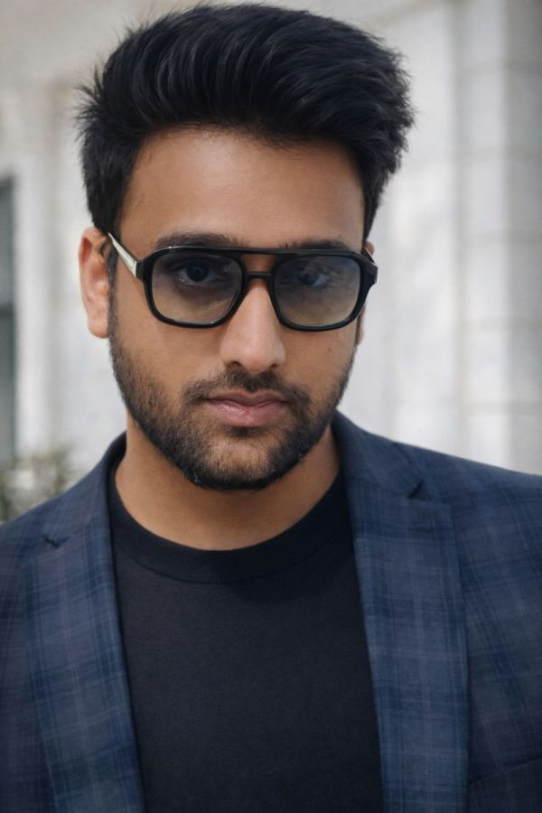

Kudapola Unnanse 1848
2026Feature-length motion picture (2026).

Doctoral Researcher in Machine Perception and NeurocinematicsCardiff School of Technologies, Cardiff Metropolitan University · Associate Tutor
I am a doctoral researcher at Cardiff School of Technologies, Cardiff Metropolitan University. My doctoral research, Predictive Modelling of Cinematic Spectatorship, integrates deep learning, cognitive neuroscience and film theory to investigate how audiences perceive, interpret and respond emotionally to moving images.
Prior to my doctoral studies, I worked for several years as a filmmaker, writing, directing and editing short films. This practice-based background informs my research in two ways: it shapes how computational models can represent formal choices such as shot composition, pacing and sound design, and it motivates the use of neural measures to examine viewers’ implicit responses to narrative.
I also teach as an Associate Tutor at Cardiff School of Technologies and contribute to STEM outreach across Wales. I welcome enquiries regarding collaboration in perceptual AI, neurocinematics and affective computing.
Research interests: machine perception; neurocinematics; EEG and brain–computer interfaces; affective computing; computational film analysis.
PosterBritish Association of Film, Television & Screen Studies Conference 2026
SubmittedManuscript
SubmittedManuscript
In preparation
In preparation
Conference paperAiRS 2019 · Annual International Research Symposium (ICBT)
Feature-length motion picture (2026).
A Sri Lanka–UK collaboration supported by the British Council’s Connections Through Culture grant programme, including the Threaded Heritage exhibition. Role: Research Assistant, with Prof. Chaminda Hewage, Dr. Sumith Gopura and Dr. Tharindu Gunawardena.
Funded by the British Council UK–Saudi Challenge Fund. PI: Dr. Sabeen Tahir (Cardiff Met). Co-Is: Dr. Sheikh Tahir and Dr. Fiona Carroll (Cardiff Met), Dr. Reem Moteab Alotaibi and Dr. Linda Mohaisen (King Abdulaziz University), and Prof. Roberto Di Pietro (KAUST).
Funded by the UK Community Renewal Fund. PI: Dr. Fiona Carroll. Co-Is: Dr. Chaminda Hewage (Cardiff Met) and Prof. Faron Moller (Swansea University).
Prof. Chaminda Hewage, Dr. Sumith Gopura, Dr. Tharindu Gunawardena
Dr. Linda Mohaisen, Dr. Sabeen Tahir, Dr. Fiona Carroll, Dr. Sheikh Tahir, Dr. Reem Moteab Alotaibi, Prof. Roberto Di Pietro
MSc internship on autonomous drone cinematography (2022). Supervisors: Dr. Esyin Chew, Dr. Chow Sing Sia
Three-day workshop at Coleg Penybont, Bridgend College · Ysgol Nantgwyn, organised by First Campus with the Eureka Robotics Centre
8th International Conference on Robot Intelligence Technology and Applications
Supervisors: Dr. Shadan Khan Khattak, Dr. Wai Keung Fung
Dissertation: Autonomous Drone Cinematography. Supervisor: Dr. Esyin Chew
Dissertation: Computational Intelligence for Filmmaking. Supervisor: Mr. Gihan Herath